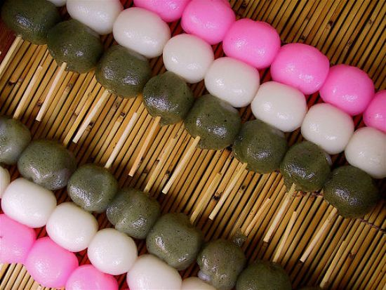

Японская сладость данго
Описание
Данго - это шарики из рисовой муки без начинки, обычно подаваемые с соусом. Варить их можно разными способами, на пару или в воде (в последнем случае они теряют свою форму, и внешне становятся не такими привлекательными)
Ингредиенты
- Рисовая мука – 300г
- Вода – 250мл
Рецепт

Высыпьте рисовую муку в миску и залейте горячей водой. После все тщательно перемешайте до получения однородной массы. Рисовое тесто должно получиться мягким и влажным (рисовое тесто очень отличается от привычного нам - пшеничного).
Теперь разделите всю массу на 25 шариков. Это можно сделать по разному: либо скрутите из теста длинную колбаску и разделите ее на примерно одинаковые 25 кусочков, либо просто напросто отделяйте тесто из общей массы на глаз. И каждый отделенный кусочек скручивайте (скатывайте) в шарик ладонями. Нечего страшного, если шарики получатся не ровными. Рисовому тесту не так-то просто придать идеальную форму.
Залейте воду в кастрюлю и вскипятите ее. После чуть-чуть подсадите воду. А за тем, поместите все шарики данго в кипящую воду и варите в течение 3-4 минут. Когда шарики сварятся, сразу же поместите их в отдельную миску с холодной водой!
Пока рисовые шарики остужаются, приготовьте 5 палочек. После оденьте шарики на палочки по 5 штук на каждую. Это сделать не сложно – по принципу шашлыка! Просто нанизывайте шарик на «шампур», проделывая дырочку в середине шарика.
Теперь подогрейте сковороду гриль или сам гриль (смотря, что Вы используете) и уложите на нее палочки с шариками. Поджаривайте шарики данго, постоянно поворачивая их, так чтобы они не подгорели, но оставили поджаренные «отметки».
Пока Вы обжариваете шарики, подготовьте сладкий соус митараши. Это нужно сделать заранее для того, чтобы шарики данго полить соусом пока они горячие. Так соус лучше пристанет (приклеится) к шарикам.
Друзья, также хотим отметить, что шарики данго не обязательно обжаривать. Есть рецепты, где шарики только отваривают, но тогда дольше 3-4 минуты – примерно 10 минут!!! А также некоторые японцы вовсе не варят шарики, а готовят их на пару! Как видите, процесс приготовления может быть разным, но вкус от этого особо не меняется.
Когда шарики и соус готовы – залейте шарики соусом поверху. Дайте чуть-чуть остыть и десерт данго готов!!!
Приятного аппетита!
Галерея
{kind=link}
{kind=link}
{kind=link}